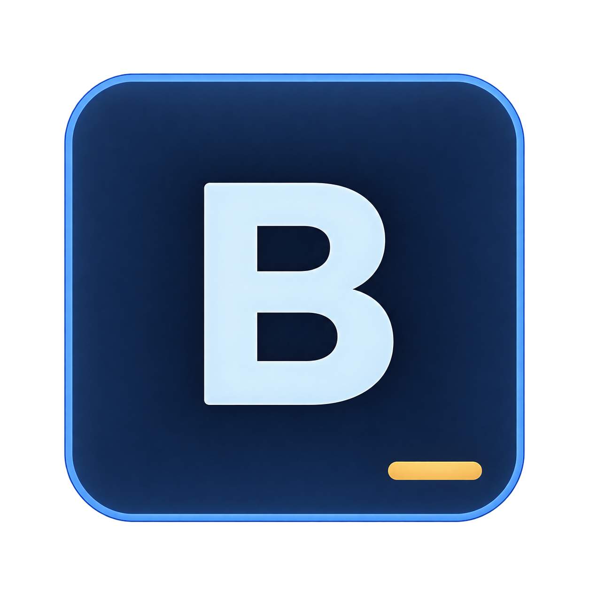
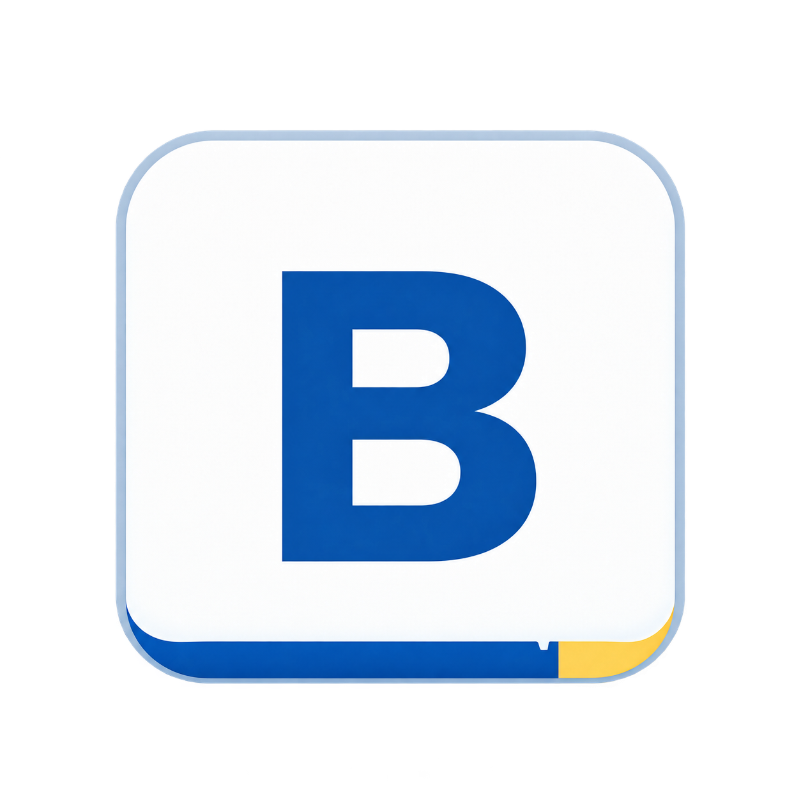
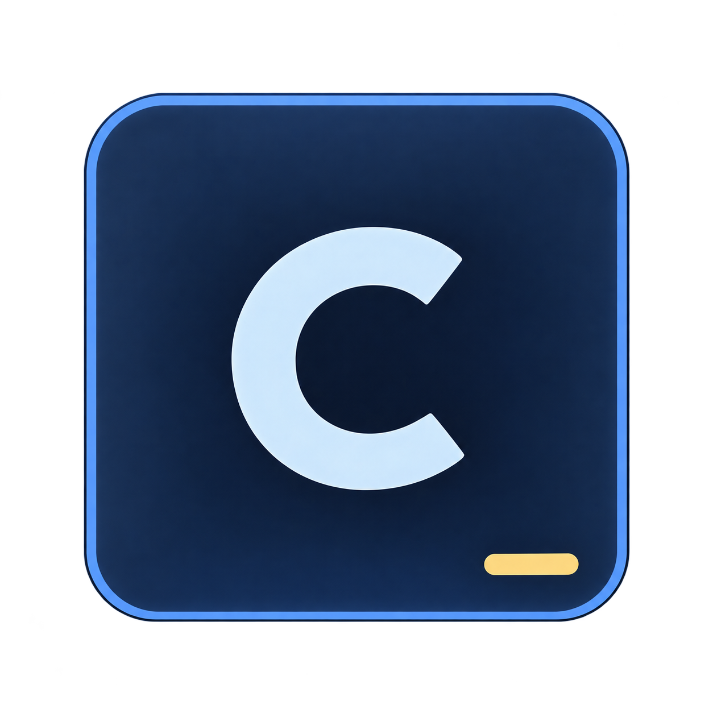
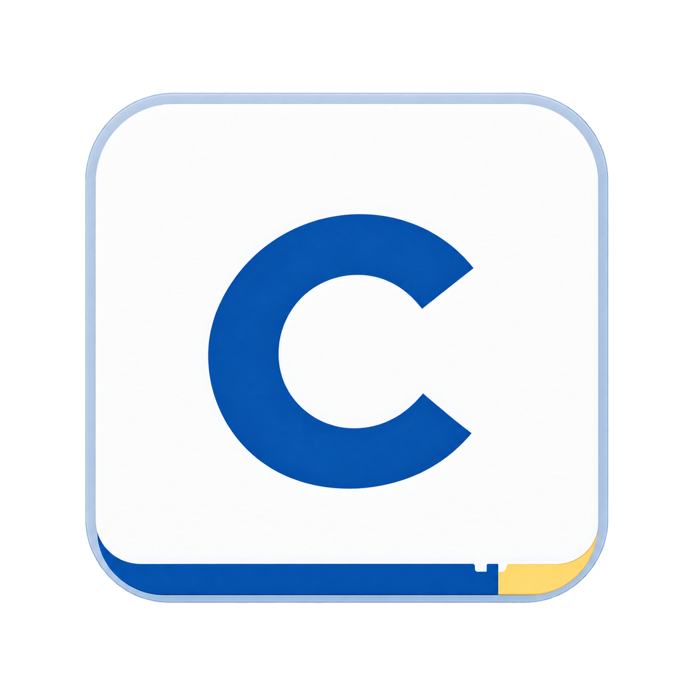
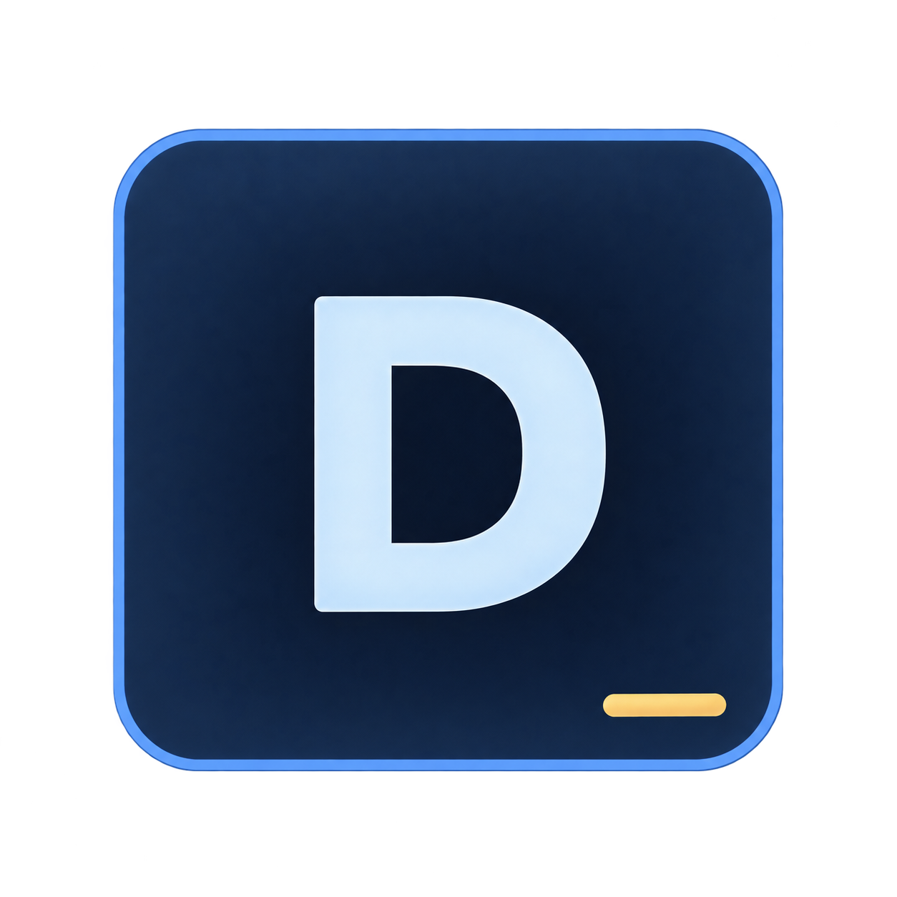

频谱–通道门控编码器GATED SPECTRAL–CHANNEL ENCODER＋5 × 62频带门控 gᵦ通道门控 g꜀联合门控 Gᵦ꜀特征融合raw + gated+ statsraw-PSD skip＋LayerNorm · FC · GELU→96-D保留原始频谱直连，同时建模频带与电极的交互。
少样本原型适配FEW-SHOT PROTOTYPE ADAPTATION＋有标签支持集每类 20 个窗口→冻结 GSC→高斯原型μ₀μ₂↓查询 PSD→冻结 GSC→高斯评分P(0) · 低负荷P(2) · 高负荷冻结编码器，用支持集引入新用户的类别语义。
因果 Markov 滤波CAUSAL TEMPORAL FILTERING＋EMA 平滑历史概率→Markov 先验状态转移→负荷状态0 / 2逐窗滤波后048时间仅使用当前与过去的观测，每条记录重新初始化。